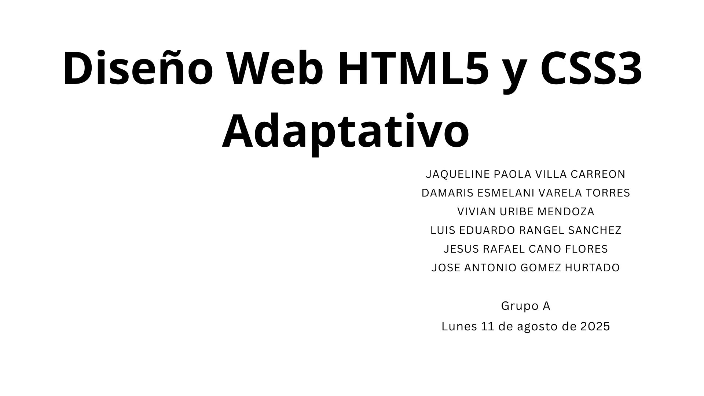
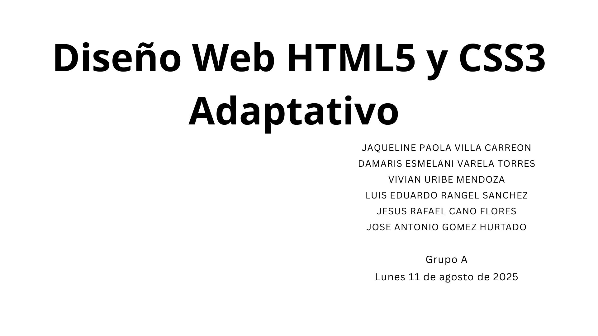

Bitácora
José Antonio Gomez Hurtado
Grupo: A
23/08/2025
Diseño Web HTML5 y CSS3 Adaptativo
Grafico de temas previos
Se vió un repaso de los temas vistos en la materia Introducción al HTML5 y CSS3 y se relacionaron los temas con algo que nos guste
La presentación completa está en este enlace



DOM en CSS, JavaScript, Eventos y Animación
Se dió una explicación de lo que es el DOM y cómo afecta en el CSS, JavaScript, los Eventos y la Animación
El DOM es una interfaz de programación que permite crear, modificar o eliminar elementos de un documento HTML, se pueden agregar eventos para hacer una pagina web dinámica
y se representa como un arbol de nodos que pueden ser modificados con JavaScript y otros lenguajes de programacion
El DOM en el CSS permite que le de un estilo visual al DOM a través del CSS
El DOM en los Eventos permite que se detecte cualquier evento (hacer click, mover el cursor) y el DOM ejecuta esos eventos
El DOM en las Animaciones permite que haya animaciones en los elementos por una serie de instrucciones que sigue el DOM
Diseño Web HTML5 y CSS3 Adaptativo
Grafico de temas previos
Se vió un repaso de los temas vistos en la materia Introducción al HTML5 y CSS3 y se relacionaron los temas con algo que nos guste
La presentación completa está en este enlace

DOM en CSS, JavaScript, Eventos y Animación
Se dió una explicación de lo que es el DOM y cómo afecta en el CSS, JavaScript, los Eventos y la Animación
El DOM es una interfaz de programación que permite crear, modificar o eliminar elementos de un documento HTML, se pueden agregar eventos para hacer una pagina web dinámica y se representa como un arbol de nodos que pueden ser modificados con JavaScript y otros lenguajes de programacion
El DOM en el CSS permite que le de un estilo visual al DOM a través del CSS
El DOM en los Eventos permite que se detecte cualquier evento (hacer click, mover el cursor) y el DOM ejecuta esos eventos
El DOM en las Animaciones permite que haya animaciones en los elementos por una serie de instrucciones que sigue el DOM